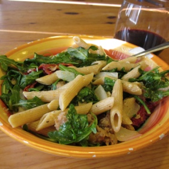

12 ounces penne pasta
1 pound spicy Italian sausage meat
1 large yellow onion, diced
1/2 cup oil-packed sun-dried tomatoes, chopped
5-ounce package arugula
1 cup grated Parmesan cheese
Salt and ground black pepper
Bring a large saucepan of salted water to a boil. Add the pasta and cook until al dente according to package directions. Reserve 1/4 cup of the cooking water, then drain and set aside.
In a large sauté pan over medium-high, brown the sausage meat and onion until cooked through, about 10 minutes. As it cooks, use a wooden spoon to break up the meat into bite-size chunks. Add the sun-dried tomatoes and arugula, then toss well. Add the pasta and toss until heated through and the arugula just begins to wilt.
Add half of the cheese and a splash of the reserved pasta cooking water. Toss well, adding more water if desired to create a sauce. Serve topped with the remaining cheese.
Per serving: 490 calories; 190 calories from fat (39 percent of total calories); 22 g fat (7 g saturated; 0 g trans fats); 70 mg cholesterol; 47 g carbohydrate; 28 g protein; 3 g fiber; 750 mg sodium.